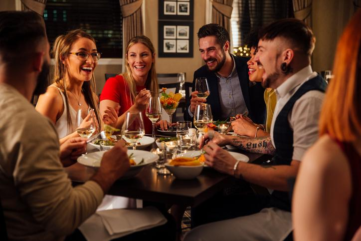

Madrid, un sabor inigualable

Madrid tiene una fuerte cultura gastronómica, con platos tradicionales que se han transcendido fronteras y se han establecido como patrimonio no sólo de la ciudad, sino de toda España.
Platos como el cocido madrileño o la tortilla de patatas, postres y desayunos como los churros con chocolate, o incluso unas deliciosas tapas acompañando una buena cerveza en una terraza son patrimonio no sólo madrileño, sino español.
Ven a visitar los mejores restaurantes de Madrid y disfruta de una tradición gastronómica inigualable.


Ven a probar la mejor gastronomía
Estos son sólo algunos de los mejores restaurantes donde experimentar la gastronomía madrileña más auténtica. Entre sus paredes encontrarás los platos presentados en esta página y muchísimos más.
Ven, entra y toma asiento. Cuando acabes de comer, querrás repetir.
Ven, entra y toma asiento. Cuando acabes de comer, querrás repetir.